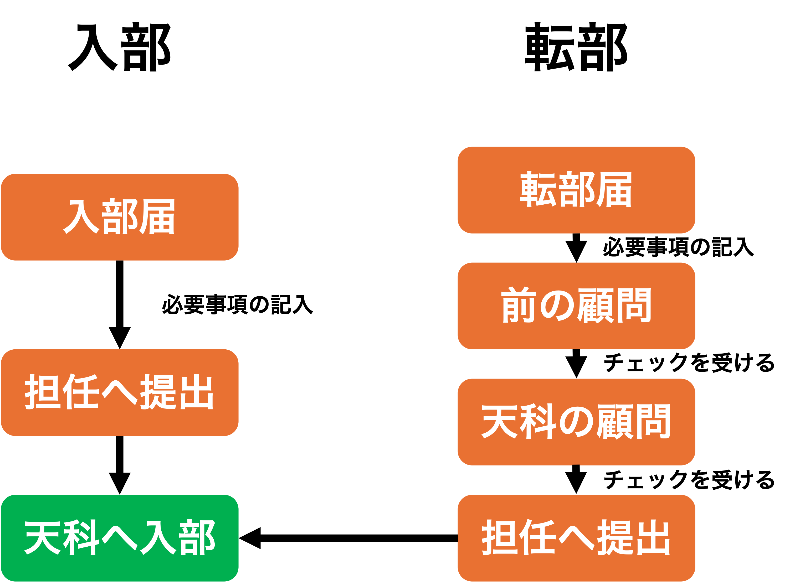

入部・転部の手続きについて(生徒向け)
天文・科学部に入部される際は、入部届に必要事項を記入の上、担任を通してご提出ください。
転部される際につきましては、転部届に必要事項を記入の上、転部前の部活の顧問、転部後の部活の顧問、担任の三者からチェックを受けて、担任へご提出ください。

天文・科学部に入部される際は、入部届に必要事項を記入の上、担任を通してご提出ください。
転部される際につきましては、転部届に必要事項を記入の上、転部前の部活の顧問、転部後の部活の顧問、担任の三者からチェックを受けて、担任へご提出ください。